Database System Review: Chapter 1-7
My review note before final exam of ZJU Database System, 2022 Spring & Summer.
Chap1: Introduction
0. Outline
- 数据库系统 Database Systems
- ( 使用 ) 数据库系统的目的 Purpose of Database Systems
- 数据视图 View of Data
- 数据模型 Data Models
-
数据库语言 Database Languages
-
数据库设计 Database Design
- 数据库引擎 Database Engine
- 数据库用户与管理员 Database Users and Administrators
- 数据库系统历史 History of Database Systems
1. Database Systems
数据库是相互关联 (interrelated) 的企业数据的聚合 (collection)，由DBMS(Database Management System) 管理。
DBMS 的主要目标是提供一种既方便 (convenient) 又高效 (efficient) 的存储 (store) 和检索 (retrieve) 数据库信息的方法。
（数据库中的）数据管理包括定义信息存储结构 (structures for storage of information) 和提供信息操作机制 (mechanisms for the manipulation of information)。
数据库系统必须确保存储信息的安全，即使系统崩溃 (crashes) 或者试图进行未授权 (unauthorized) 访问
如果要在多个用户之间共享数据，系统必须提供并发控制(concurrency control) 机制，以避免可能的异常 (anomalous) 结果。
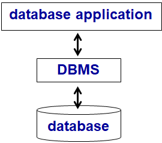
数据库 - 数据库管理系统 DBMS- 数据库应用程序的层次结构
2. Purpose of Database Systems
直接基于文件系统 (file systems) 的数据库应用程序会招致诸多严重后果：
- 数据冗余 Data redundancy与不一致 inconsistency
- 文件格式繁多，文件间信息冗余、不一致 multiple file formats, duplication of information in different files
- 数据孤立 Data isolation
- multiple files and formats
- 存取数据困难 Difficulty in accessing data
- Need to write a new program to carry out each new task
- 完整性问题 Integrity problems
- 完整性约束 (Integrity constraints) 隐式表达（显式表达 stated explicitly 比较好）
- 维护与拓展：难以增加 / 更改完整性约束
- 原子性问题 Atomicity problems
- 错误 Failures 发生于数据库不一致状态 inconsistent state( 只有部分数据更新被执行 partial updates carried out)
- 并发访问异常 Concurrent access anomalies
- 并发访问：性能需求
- 不受控的并发访问将导致不一致 inconsistencies
- 安全性问题 Security problems
- 需要限制用户的可访问数据范围
- 认证 Authentication
- 权限 Priviledge
- 审计 Audit
相对应地，数据库系统有如下特征：
- 数据持久性data persistence
- 数据访问便利性convenience in accessing data
- 数据完整性data integrity
- 多用户并发控制concurrency control for multiple user
- 故障恢复failure recovery
- 安全控制security control
3. View of Data
数据库三层模型
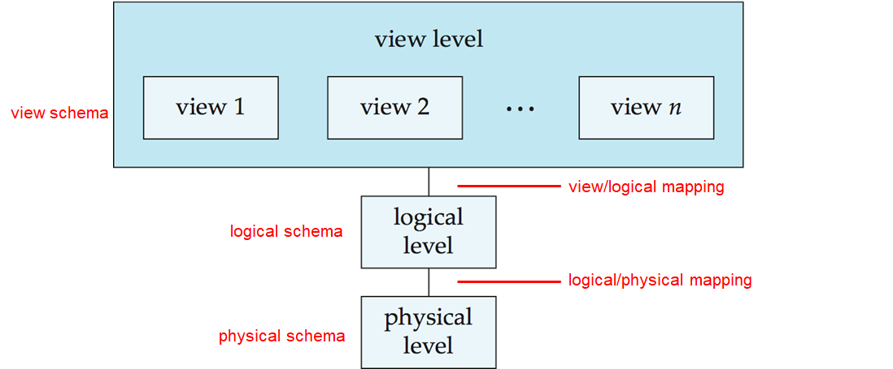
数据库可以分为视图层、逻辑层和物理层。分别由视图 / 逻辑映射、逻辑 / 物理映射进行变换。
模式 (schema) 与实例 (instance)
- Schema：数据库的逻辑结构
- Physical schema: database design at the physical level
- Logical schema: database design at the logical level
- Instance：特定时间点，数据库的实际内容
数据独立性 (Data Independence)
- Physical Data Independence：能够在不修改逻辑模式的前提下修改物理模式的能力
- 应用程序依赖于逻辑模式即可
- 一般来说，应明确定义各层次、部分之间的接口，以便某些部分的更改不会严重影响其他部分
。 （即好好设计 logical/physical mapping） - Logical Data Independence：能够在不修改用户视图模式的前提下修改逻辑模式的能力
- 需要好好设计 view/logical mapping
4. Data Models
- A collection of tools for describing
- Data
- Data relationships
- Data semantics(语义)
-
Data constraints(约束)
-
Relational model(关系模型)
- Entity-Relationship data model
- Object-based data models
- Object-oriented ( 面向对象数据模型 )
-
Object-relational ( 对象 - 关系模型模型 )
-
Semistructured data model (XML)(半结构化数据模型)
-
Other older models:
- Network model (网状模型)
- Hierarchical model(层次模型)
5. Database Languages
classification
- Data Definition Language (DDL) ：产生 templates stored in data dictionary
- data dictionary：包括 metadata
- database schema
- integrity constraints：primary key, referential integrity
- authorization
- Data Manipulation Language (DML)
- Language for accessing and manipulating the data organized by the appropriate data model
- also known as query language
- 2 类
- Procedural – 用户指定所需 data，如何得到 data
- Declarative (nonprocedural) – 用户只需指定所需 data
- SQL：最广泛应用的 query language
- SQL Query Language
- Application Program Interface （API）
- 非过程查询语言（如 SQL）不如通用图灵机强大。
- SQL 不支持用户输入、显示器输出或网络通信等操作。
- 此类计算和操作必须用宿主语言 (host language) 编写（C/C++, Java or Python.）
- 应用程序通常通过以下方式之一访问数据库：
- 语言扩展以允许嵌入式 SQL (embedded SQL)
- API(e.g., ODBC/JDBC)，允许 SQL 查询语句被送入数据库
6. Database Design
ER 模型与规范化理论 (Normalization Theory)
7. Database Engine
功能组件 functional components
- storage manager存储管理
- 提供接口：底层数据与提交给系统的应用程序查询之间
- 所负责任务：
- 操作系统文件管理器的交互
- 数据高效存储、检索和更新
- 包括：
- 文件管理器 File manager
- 缓冲区管理器 Buffer manager
- 权限与完整性管理器 Authorization and integrity manager
- 事务管理器 Transaction manager
- 作为物理系统实现，storage manager 实现了如下数据结构：
- 数据文件 Data files-- 存储数据库本身
- 数据字典 Data dictionary-- 存储数据库结构的元数据，特别是模式。
- 索引 Indices-- 提供对数据项的快速访问。
- 统计数据 Statistical data
- query processor component 查询处理
- DDL 解释器 DDL interpreter——解释 DDL 语句并在数据字典中记录定义。
- DML 编译器 DML compiler——将查询语言中 DML 语句转换为评估计划 (evaluation plan)，评估计划由查询评估引擎 (query evaluation engine) 能理解的底层指令组成。
- DML 编译器执行查询优化，即从各种备选方案中选择成本最低的评估计划。
- 查询评估引擎 Query evaluation engine——执行 DML 编译器生成的底层指令。
-
Parsing and translation - Optimization - Evaluation
-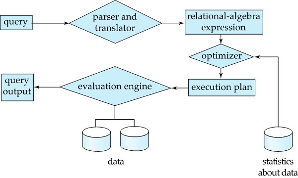
-
transaction management component 事务管理
- 事务transaction：在数据库应用程序中执行单个逻辑功能的操作集合。
- 恢复管理器Recover Manager：确保数据库在出现故障时仍保持一致（consistent）状态。故障包括系统故障 (system failures)（电源故障 power failure, 操作系统崩溃 OS crashes 等）和事务故障 (transaction failures)。
- 并发控制管理器Concurrency-control manager：控制并发事务之间的交互，以确保数据库的一致性。
8. Database Users and Administrators
Database Users
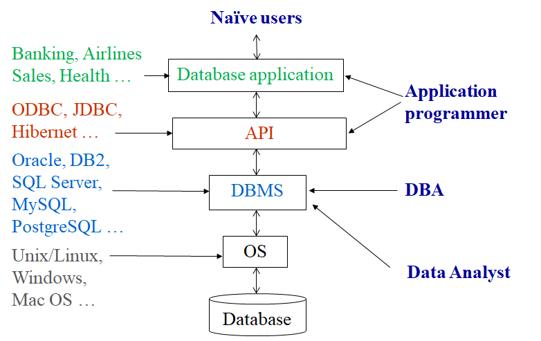
Naive users：只与数据库应用程序交互 (use interfaces)
Application programmer：Database application, API（通过 DML calls 交互）
sophisticated(Data Analyst)：DBMS, query tools
DBA(Database Administrator)：DBMS, administration tools
协调 (coordinate) 数据库系统的所有活动；对企业的信息资源和需求有很好的了解。
- Tasks
- 模式定义Schema definition
- 存储结构和访问方法定义Storage structure and access method definition
- 模式和物理组织方式修改Schema and physical organization modification
- 授权用户访问数据库Granting user authority to access the database
- 指定完整性约束Specifying integrity constraints
- 充当与用户的联络人Acting as liaison with users
- 监控性能和响应需求变化 - 性能调整Monitoring performance and responding to changes in requirements - Performance Tuning
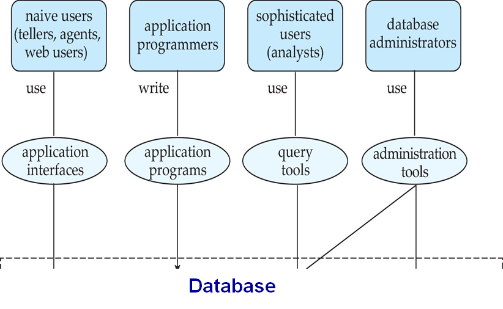
9. History of Database Systems
- 1950s-early 1960s：magnetic tapes, sequential access
- 1960s：hard disks(direct access), network/hierarchical model
- 1961, IDS, GE, Charles W.Bachman(father of databases, 1973 Turing)
- 1968, IBM IMS
- 1970s：Business Aplications(OLTP)
- 1970, relational model, Edgar F. Codd(1981 Turing)
- 1974, System R prototype, Jim Gray, IBM
- 1974, Ingres prototype, Michael Stonebraker
- 2004, SIGMOD renamed its highest prize to the SIGMOD Edgar F. Codd Innovations Award( 数据库领域最高奖 ).
- 1980s:
- RDBMS implementation
- Research relational prototypes evolve into commercial system
- Oracle(1983), IBM DB2(1983), Informix(1985), Sybase(1987), Postgres (PostgresSQL,1989)
- Parallel/Distributed/Object-oriented/Object-relational database systems
- Extended to Engineering Applications
- 1998 Turing：Jim Gray(also SIGMOD)，disappear Jan. 28 2007
- 1990s:
- Business intelligence(BI)
- Large decision support and data-mining applications
- Large multi-terabyte data warehouses
- OLAP(Online Analytical Processing)
- Emergence of Web commerce
- The Web changes everything
- New workloads – performance, concurrency, availability
- 2000s:
- Web Era
- Big data
- XML and XQuery standards
- Automated database administration
- NoSQL(not only SQL)
- looser consistency, horizontal scaling and higher availability
- useful for big data
- MongoDB, Cassandra, HBase
- 2010s:
- NewSQL
- Cloud database
- Blockchain
- Autonomous Database (AI powered Database)
- NewSQL：VoltDB, NuoDB, Clustrix, JustOneDB
- 2014 Turing：Michael Stonebraker
- 2010s: Cloud Database
- A cloud database is a database that typically runs on a cloud computing platform, access to it is provided as a service.
- Characteristics
- Scalability, High availability, Resource transparency, Trustiness, Security and privacy
- Vendors
- Amazon RDS/DynamoDB/SimpleDB
- Microsoft Azure SQL Database
- Google Aurora
- Huawei GaussDB
- Aliyun PolarDB
- Tencent TDSQL-C/ TencentDB
Chap2: Relational Model
0. Outline
- 键值
- 关系代数
1. key
- superkey
- candidate key：minimal superkey
- primary key：selected candidate key
- foreign key：referencing->referenced(primary key)
- referential integrity
2. relational algebra
- "Pure” languages:
- Relational algebra：非图灵机等价
- Tuple/Domain relational calculus
- 6 basic
- select：条件称为selection predicate
- project
- union
- set difference
- union, set differenct 都要求 same arity，对应属性的 type 要 compatible
- Cartesian product
- rename
- Additional
- set intersection
- natural join、theta join
- assignment
- outer join
- semijoin
- division operation
- extended
- Generalized Projection：arithmetic functions of attributes
- Aggregation function：avg、min、max、sum、count
- multiset 中 duplicates 树
- selection: 满足条件，保持
- projection: 保持
- cross product: m of t1 in r, n of t2 in s, mn in r x s
- union: m + n
- intersection: min(m, n)
- difference: min(0, m - n)
Chap3: Introduction to SQL
1. SQL
- Structured Query Language(SQL)
2. DDL
- 包含 schema, domain, integrity constraints, indices, security+authorization, physical storage structure
- type
- (var)char, int, smallint, numeric(p, d), real, double, float
- date(ymd), time(hms), timestamp(date+time), interval
3. integrity constraints
- not null
- primary key()
- foreign key() references r()
- on delete/update cascade/set null/restrict/set default
- alter
- alter table r add A D
- alter table r drop A
4. DML
- duplicates：distinct/all(default)
- between 闭区间
- string: like ' 通配符 '
- % 配 string, _ 配字符
- 逃逸字符用 \，或用 escape 指定
- order by ... desc/asc(default)
- limit offset=0, cnt
- union, intersect, except
- 默认去 duplicates，可 +all
- 含 null 算术得 null，比较得 unknown，is null 判断
- 除 count 的聚合函数忽略 null，如只有 null 返回 null
- 嵌套子查询
- set membership：(not) in
- set comparison：some, all
- scalar subquery
- (not) exists
- unique（嵌套子查询不可 distinct）
- delete from ... where
- insert into ... values()
- insert into t1 select ... from t2
- update ... set ... where
- case when then else end
Chap4: Intermediate SQL
1. join
- join type：inner join, left/right/full outer join
- join condition：natural, on..., using ...
2. SQL Data Types and Schemas
type, domain
- create type ... as numeric(12, 2)
- create domain ... char(20) not null
- create domain ... char(20)
- constraint (name)
- check(value in());
- Large-Object Types
- blob: binary large object
- clob: character large object
3. Integrity constraints
- not null
- primary key
- unique
- check()：可嵌套查询，但未常实现
- foreign key
Assertion
create assertion (name) check ...
4. views
create view v as ...
插入 view，也会改变原 relation
物理 view
5. Indices
create index (name) on r(A)
6. Transactions
-
commit, rollback
-
SET AUTOCOMMIT = 0
- serializable, repeatable read, read commit, read uncommit
- ACID
7. Authorization
- select, insert, update, delete
- index, resources, alteration, drop
- grant (priv) on () to (user)
- revoke (priv) on () from (user)
- DCL
- create role (name)
- grant (role) to (user)
- grant reference () on () to()
- grant with grant option
- revoke cascade/restrict
Chap5: Advanced SQL
1. Accessing SQL From a Programming Language
- API, O(Open)DBC(Connectivity)/J(Java)DBC, Embedded SQL(in C), SQLJ, JP(Persistence)A(API)
2. SQL Functions
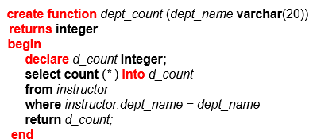
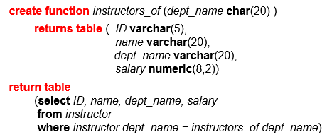
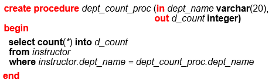
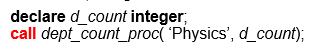
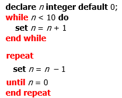
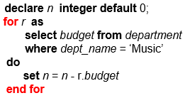
3. Trigger
-
insert, delete, update
-
before, after
- referencing new/old row/table as
- for each statement/row
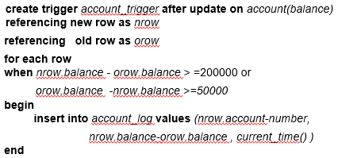
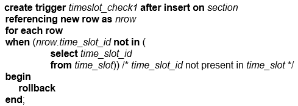
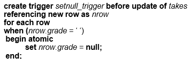
Chap6: Entity-Relationship Model
1. DB Design Process
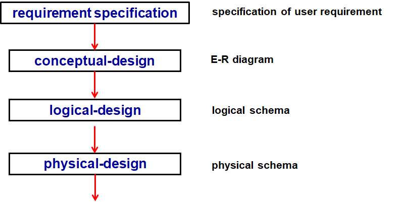
- avoid：redundancy and incompleteness
2. ER model
-
roles
-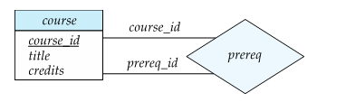
-
binary/ternary relationship
- attributes(with domain)
- simple/composite
- single-valued/multivalued
- derived
- weak entity set->identifying entity set
- discriminator/partial key
- Specialization/Generalization
- Top-down, attribute inheritance/ bottom-up
- disjoint/overlapping
- total/partial(completeness constraint)
Chap7: Relational Database Design
1. pitfall of bad relations
- 信息重复 Information repetition
- 插入异常 Insertion anomalies
- 更新困难 Update difficulty
2. Decomposition Lossless
- R->R1,R2，充要条件
- \(R_1\cap R_2\rightarrow R_1\)
- \(R_1\cap R_2\rightarrow R_2\)
3. Forms
- 第一范式 First Normal Form：各 attribute 都 atomic（不可分）
- Boyce-Codd Normal Form(BCNF)：任意函数依赖 \(\alpha\rightarrow\beta\)，要么 trivial，要么 \(\alpha\) 为超键
- 3NF：BCNF 必 3NF。若 \(\beta-\alpha\) 的任意属性都在整体 \(R\) 的某 candidate key 中，也属 3NF。
- 4NF：类似 BCNF 的定义。若 4NF，必 BCNF。
4. Dependencies
Functional dependencies
- functional/multivalued dependencies
- legal instance：满足现实约束
- superkey：K is superkey 等价于 \(K\rightarrow R\)
- trivial：\(A\rightarrow B\) is trivial if \(B\subset A\)
- closure：all FDs(different from attribute closure)
-
Armstrong’s Axioms:
-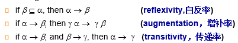
-
sound and complete
-
Additional
-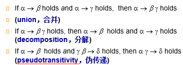
-
Canonial Cover：去除所有Extraneous Attributes
-
dependency preserving